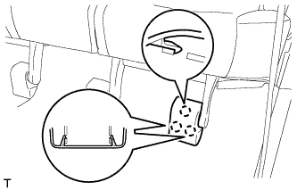
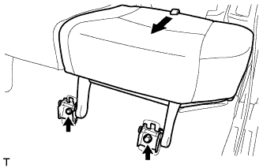
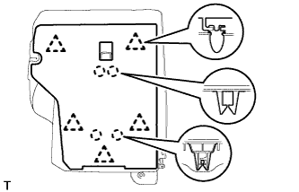
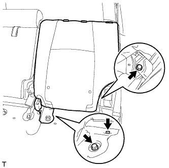
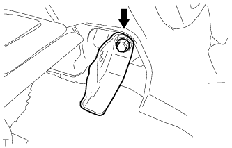
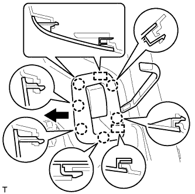
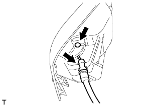
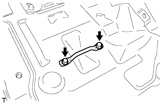

ЗАДНЕЕ СИДЕНЬЕ № 1 В СБОРЕ (складываемое вдвое раздельное сиденье 60/40 с левой стороны) > СНЯТИЕ |
| 1. СНИМИТЕ НАКЛАДКУ ПРАВОЙ ПЕТЛИ ПОДУШКИ ЗАДНЕГО СИДЕНЬЯ |
 |
С помощью съемника молдингов расцепите 3 захвата и снимите крышку.
| 2. СНИМИТЕ НАКЛАДКУ ПЕТЛИ ПОДУШКИ ЛЕВОГО ЗАДНЕГО СИДЕНЬЯ |
|  |
С помощью съемника молдингов расцепите 3 захвата и снимите крышку.
| 3. СНИМИТЕ ПОДУШКУ ЛЕВОГО ЗАДНЕГО СИДЕНЬЯ В СБОРЕ |
|  |
Вытяните хомут подушки заднего сиденья и освободите замок.
Выверните 2 болта и снимите подушку сиденья.
| 4. СНИМИТЕ ПОДГОЛОВНИК ЗАДНЕГО СИДЕНЬЯ В СБОРЕ |
Снимите подголовник.
| 5. СНИМИТЕ ОБИВКУ СПИНКИ ЗАДНЕГО СИДЕНЬЯ |
Нажмите на кнопку разблокировки замка спинки сиденья, чтобы снять блокировку и сложить спинку сиденья.
 |
С помощью отвертки освободите 4 захвата и снимите крышку.
| 6. СНИМИТЕ ПАНЕЛЬ ПОКРЫТИЯ СПИНКИ ЛЕВОГО ЗАДНЕГО СИДЕНЬЯ В СБОРЕ |
|  |
С помощью съемника фиксаторов расцепите 5 фиксаторов.
Освободите 4 захвата и снимите панель покрытия.
| 7. СНИМИТЕ СПИНКУ ЛЕВОГО ЗАДНЕГО СИДЕНЬЯ В СБОРЕ |
|  |
Выверните 2 болта, крепящих спинку сиденья к полу.
Сложите спинку сиденья, выверните болт из петли, а затем снимите спинку сиденья.
| 8. СНИМИТЕ ПЕТЛЮ СПИНКИ ЛЕВОГО ЗАДНЕГО СИДЕНЬЯ В СБОРЕ |
|  |
Выверните болт и снимите петлю.
| 9. СНИМИТЕ ОПОРУ РЫЧАГА ФИКСАЦИИ СПИНКИ ЛЕВОГО ЗАДНЕГО СИДЕНЬЯ |
|  |
С помощью съемника молдингов расцепите 6 захватов.
Переместите щиток в направлении, указанном на рисунке стрелкой, чтобы освободить 2 направляющих, и снимите опору рычага.
|  |
Освободите зажим троса и отсоедините трос.
| 10. СНИМИТЕ ЛЕВОЕ ЗАДНЕЕ СИДЕНЬЕ № 2 В СБОРЕ (для моделей с задним сиденьем № 2) |
Для моделей с противоположно расположенными сиденьями:
Снимите заднее сиденье № 2 в сборе (Нажмите здесь).
| 11. СНИМИТЕ ОПОРНУЮ НАКЛАДКУ ЛЕВОЙ ЗАДНЕЙ ДВЕРИ |
 |
Наклейте защитную клейкую ленту вокруг опорной накладки задней двери.
С помощью отвертки освободите 3 фиксатора, 6 захватов и 2 направляющие и снимите опорную накладку задней двери.
| *1 | Защитная клейкая лента |
| 12. СНИМИТЕ УПЛОТНИТЕЛЬ ОБШИВКИ ПРОЕМА ЛЕВОЙ ЗАДНЕЙ ДВЕРИ |
 |
Снимите уплотнитель обшивки проема задней двери.
| 13. СНИМИТЕ ЗАДНЮЮ КРЫШКУ В СБОРЕ (для моделей с задней крышкой) |
Снимите заднюю крышку.
| 14. СНИМИТЕ ПЕРЕДНЮЮ ОБЛИЦОВОЧНУЮ НАКЛАДКУ БАГАЖНОГО ОТДЕЛЕНИЯ |
 |
Освободите 4 захвата и снимите накладку.
 |
Выверните болт и снимите защелку ремня для удержания багажа и переднюю облицовочную накладку багажного отделения.
| *1 | Защелка ремня для удержания багажа |
| 15. СНИМИТЕ ПАНЕЛЬ ПОЛКИ БАГАЖНОГО ОТДЕЛЕНИЯ № 1 В СБОРЕ |
 |
Освободите фиксатор и снимите панель полки багажного отделения № 1.
| 16. СНИМИТЕ ЗАДНЮЮ ОПОРНУЮ ПЛАСТИНУ КОВРИКА ЗАДНЕГО ПОЛА |
 |
Освободите 5 фиксаторов и 4 захвата и снимите заднюю опорную пластину коврика заднего пола.
| 17. СНИМИТЕ ЛЕВУЮ БОКОВУЮ НАПРАВЛЯЮЩУЮ ПОЛА БАГАЖНОГО ОТДЕЛЕНИЯ (для моделей с направляющей полки багажного отделения) |
 |
Выверните 3 болта и снимите боковую направляющую пола.
| 18. СНИМИТЕ ПРАВУЮ БОКОВУЮ НАПРАВЛЯЮЩУЮ ПОЛА БАГАЖНОГО ОТДЕЛЕНИЯ (для моделей с направляющей полки багажного отделения) |
| 19. СНИМИТЕ ЗАДНИЙ НАПОЛЬНЫЙ КОВРИК |
Освободите 4 захвата и снимите задний напольный коврик.

| *A | для моделей без направляющей полки багажного отделения | *B | для моделей с направляющей полки багажного отделения |
| *C | Для сидений с противоположным расположением | - | - |
| 20. СНИМИТЕ НАКЛАДКУ КРЕПЛЕНИЯ ПОЯСНОГО РЕМНЯ БЕЗОПАСНОСТИ ЗАДНЕГО СИДЕНЬЯ № 1 |
 |
Освободите 3 захвата и снимите накладку крепления поясного ремня безопасности заднего сиденья № 1.
| 21. СНИМИТЕ ЗАЩЕЛКУ ОБЛИЦОВКИ БАГАЖНОГО ОТДЕЛЕНИЯ № 1 |
 |
Снимите защелку облицовочной панели багажного отделения, повернув ее по часовой стрелке.
| 22. СНИМИТЕ КОЛПАЧОК КРЕПЛЕНИЯ ЗАДНЕЙ КРЫШКИ № 1 (для моделей без задней крышки) |
 |
С помощью отвертки отцепите 2 захвата и снимите колпачок крепления задней крышки № 1.
| *1 | Защитная клейкая лента |
| 23. СНИМИТЕ ПЕРЕДНЮЮ БОКОВУЮ ОБЛИЦОВОЧНУЮ НАКЛАДКУ БАГАЖНОГО ОТДЕЛЕНИЯ (для моделей с задней крышкой) |
 |
С помощью отвертки освободите 2 захвата и снимите переднюю боковую облицовочную накладку полки багажного отделения.
| *1 | Защитная клейкая лента |
| 24. СНИМИТЕ ЛЕВУЮ БОКОВУЮ ОБЛИЦОВОЧНУЮ ПАНЕЛЬ ПОЛКИ БАГАЖНОГО ОТДЕЛЕНИЯ В СБОРЕ |
Для моделей без заднего сиденья № 2:
 |
Выверните болт и отсоедините напольное крепление ремня безопасности заднего сиденья № 1.
 |
Освободите 6 захватов и 2 направляющих и отсоедините опору рычага фиксации спинки заднего сиденья.
Выверните 4 болта и 2 винта.
Ослабьте 5 зажимов и 8 фиксаторов.
Пропустите опору рычага фиксации спинки заднего сиденья через боковую облицовочную панель полки багажного отделения и снимите боковую облицовочную панель полки багажного отделения.

Для моделей с задним сиденьем № 2:
|
Выверните болт и отсоедините напольное крепление ремня безопасности заднего сиденья № 1.
 |
Выверните болт и отсоедините напольное крепление ремня безопасности заднего сиденья № 2.
Выверните 2 болта и 2 винта.
Освободите 4 фиксатора и 8 захватов и снимите боковую облицовочную панель полки багажного отделения.

| 25. СНИМИТЕ ЗАЩЕЛКУ ЗАМКА СПИНКИ ЛЕВОГО ЗАДНЕГО СИДЕНЬЯ № 2 В СБОРЕ |
 |
Отверните 2 болта.
Освободите захват и снимите защелку.
| 26. СНИМИТЕ ЗАЩЕЛКУ ЗАМКА ПОДУШКИ ЗАДНЕГО СИДЕНЬЯ |
|  |
Выверните 2 болта и снимите защелку.